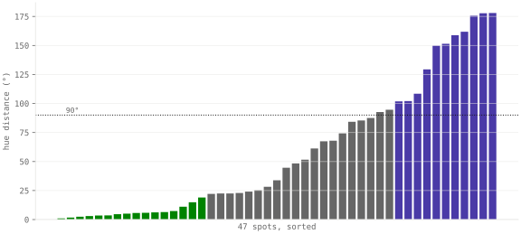
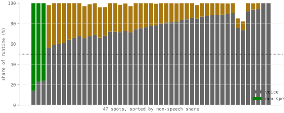
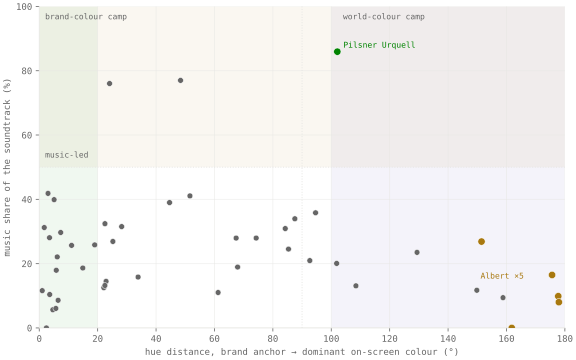

Note · 14 September 2026 · Czech advertising, four studies, spring 2026
Colour and sound in 47 Czech YouTube ad spots, and the language of 24 brand homepages
An index of four exploratory studies of Czech advertising from spring 2026, which measure the colour and sound of 47 ad spots from 13 brands' YouTube channels and the homepage language of the same market.
- spots · brands · frames
- 47 · 13 · 2 251 one frame per second
- colour: brand-led · between · world-led
- 16 · 20 · 11 hue distance to the brand's anchor colour; hand-set cut-offs at 20° and 100°
- sound: voice-led · music-led
- 44 · 3 speech, or non-speech sound, over half of runtime
- homepages scraped
- 24 of 30 6 blocked or empty
Overwhelmed? Here's the short version
- Measured against each brand's own anchor colour, 16 of 47 spots keep their dominant hue within 20° and 11 lie more than 100° away. Speech fills more than half the runtime in 44 of 47 spots (median 76 %).
- The colour groups rest on hand-set cut-offs and one hand-picked anchor colour per brand, and one brand, Albert, supplies 5 of the 11 spots beyond 100°; with a 90° cut-off that group is 13.
- A view-count prediction was checked late: one claim is indeterminate and the other not supported.
- Every number is a descriptive count on one corpus of YouTube uploads.
- The homepage map does not establish a shared register between brands.
Photo: Hamza Ullah · CC0, toned
Four studies
This page indexes four exploratory studies built over a few weekends in spring 2026, each with its own repository and page. They describe; none tests a hypothesis. A view-count prediction drawn from Spot Scorer's pitch was registered separately on 18 May; it is checked below. The marketing literature has studied colour as an executional cue in advertising and as a carrier of brand meaning12, music as a variable in advertising3, and the distinctive assets by which a brand is recognised4. The studies here only measure what 47 spots and 24 homepages put on screen and in text. The spots are the most recent uploads of 15 to 180 seconds with more than 10 000 views on the Czech YouTube channels of 13 brands, up to five per brand5. Two spots, Kofola's and AAA Auto's, were added by hand outside that rule, and one Lidl spot runs 14.5 seconds.
The colour study samples each spot at one frame per second (2 251 frames, near-black ones dropped), groups each frame's pixels into five dominant colours with K-means in CIE-LAB, a perceptual colour space, and measures the angle on the hue wheel between the spot's dominant chromatic hue and one hand-picked anchor colour per brand, such as T-Mobile's magenta or Lidl's blue. Sixteen spots fall within 20° of the anchor, among them all five of T-Mobile's and four of Lidl's, and eleven lie beyond 100°, five of which are Albert's (151–178°); twenty lie between. Neither cut-off has a stated rationale. At 90°, where fig. 1 draws its line, the world-led group is 13 of 47. The line is a reference, not a perceptual threshold. Pilsner Urquell's brand green covers 0.2 % of its spot's picture and AAA Auto's yellow 0.001 %5.
Exploratory: 16 of 47 spots stay within 20° of their brand's colour and 11 lie beyond 100°, five of them Albert's.

spots.parquet (color-fingerprint-cz, May 2026).The sound study takes the same spots, detects speech with silero-vad, a speech detector, and estimates tempo by beat tracking and key by correlating the pitch profile with major and minor templates (Krumhansl–Schmuckler) in librosa. A spot is voice-led when more than half its runtime is speech. Music here means non-speech, non-silent sound, so it includes effects and ambience. Forty-four spots are voice-led and three music-led: Pilsner Urquell's Alfons at 86 % music and two McDonald's image spots at 77 % and 76 %, with the next spot at 42 %. Tempo is between 110 and 140 bpm in 23 of 47 spots. The key finder labels 27 of 47 minor, 57 %, which is not distinguishable from an even split (binomial p ≈ 0.4). Tempo and key estimates on speech-dominated audio are both unreliable6.
Exploratory: 44 of 47 spots are voice-led; only three give more than half their runtime to music, effects and ambience.

spots_audio.parquet (sound-fingerprint-cz, May 2026).The homepage study scraped the title, description, first headings and first paragraphs of 30 brand homepages, of which 24 succeeded. The texts were turned into vectors with the language model multilingual-e5-base, projected onto a two-dimensional map with UMAP and grouped with K-means (k = 4). ČSOB, Česká spořitelna, Fio, Air Bank, Komerční banka, Generali, ČEZ and Škoda Auto fall into one cluster, but the words the study lists as setting it apart are banka, škoda, čez, fio, česká, brand and sector names (it does not say how those words were picked), so the cluster may reflect names more than tone of voice. The map's 54 points are the 24 homepages and 30 search-trend phrases, so it shows approximate neighbourhoods rather than distances. The study's own page is titled "Three templates", while its clustering uses k = 47. A fourth piece, Spot Scorer, shows any spot's colour and audio metrics against its sector median8.
Exploratory: only Pilsner's Alfons is both far from its brand colour and mostly non-speech; Albert's five spots are far from theirs and mostly speech.

The view-count prediction of 18 May
On 18 May a file committed to the hub repository named five spots, three "coherent" (Pilsner, a McDonald's promo, a Lidl brand-colour spot) and two "muddled" (Albert, a Vodafone spot). The file's labels do not match the published metrics: it puts the Albert spot at 174° and the Vodafone spot at 15°, where the metrics give 151° and 1°, so the "muddled" Vodafone spot is brand-led in fig. 1. Claim A was that over thirty days, to 17 June, the coherent set would gain more YouTube views in total; claim B, that it would hold the top three ranks. The file listed the confounds (existing views, subscribers, paid promotion, the algorithm) and n = 5. The check was not run on 17 June; it was run on 14 September, 119 days after the baseline, so it is not the registered test910.
| spot | predicted | 18 May | 14 Sep | Δ views |
|---|---|---|---|---|
| Pilsner Urquell · Alfons | top | 18 660 | 18 704 | +44 |
| McDonald's · Fakt si myslíš | top | 851 825 | 855 594 | +3 769 |
| Lidl · Vše pro skvělé grilování | top | 511 921 | private | unmeasurable |
| Albert · Gourmet receptury | bottom | 272 017 | 273 381 | +1 364 |
| Vodafone · Nejlepší pevný internet | bottom | 509 694 | 511 540 | +1 846 |
The Lidl spot was made private before the check. Claim A is indeterminate: the check ran at 119 days instead of the registered 30, so the 30-day increments were never measured. The two measurable coherent spots gained 3 813 views against 3 210 for the muddled pair, and Lidl's missing increment could only add to the coherent side, but over the wrong window. Claim B is not supported: Pilsner gained 44 views and ranks last, whatever the Lidl figure would have been. The check output is not committed (private; not verifiable). As the file itself anticipated, view counts reflect much more than the spot10.
What these studies do not show
The corpus is selected by what 13 brands upload to YouTube, not by television airtime; two spots were added by hand, and some McDonald's uploads carry Slovak-language titles (the audio language was not checked). Eight brands supply 40 of the 47 spots, so a single brand can dominate a group, as Albert does with 5 of the 11 world-led spots. Sampling at one frame per second misses flash cuts, K-means with k = 5 is a choice, anchor colours are one hand-picked value per brand, and hue distance is poorly defined for near-grey palettes such as AAA Auto's. None of the counts carries an interval. The homepage map rests on 24 of 30 pages and 54 points, and neither Spot Scorer nor any metric here has been validated against an outcome57.
References
- Gorn, G. J., Chattopadhyay, A., Yi, T. and Dahl, D. W. (1997). Effects of color as an executional cue in advertising: they're in the shade. Management Science 43(10), 1387–1400. doi.org/10.1287/mnsc.43.10.1387. Accessed 29 September 2026.
- Labrecque, L. I. and Milne, G. R. (2012). Exciting red and competent blue: the importance of color in marketing. Journal of the Academy of Marketing Science 40(5), 711–727. doi.org/10.1007/s11747-010-0245-y. Accessed 29 September 2026.
- Bruner, G. C. (1990). Music, mood, and marketing. Journal of Marketing 54(4), 94–104. doi.org/10.1177/002224299005400408. Accessed 29 September 2026.
- Romaniuk, J. (2018). Building Distinctive Brand Assets. Oxford University Press.
- Šandová, B. (2026). Brand color or world color: a field study of Czech TV advertising. sandovabarbora.github.io/color-fingerprint-cz; code color-fingerprint-cz, commit
49d2614(README: corpus rules, 1 fps, K-means k = 5 in CIE-LAB, anchors inconfig/brands.yaml, limitations). Accessed 29 September 2026. - Šandová, B. (2026). Voice or music: a field study of Czech TV advertising's audio. sandovabarbora.github.io/sound-fingerprint-cz; code sound-fingerprint-cz, commit
5421429. Accessed 29 September 2026. - Šandová, B. (2026). How many Czech brand templates are there? Three. sandovabarbora.github.io/strategic-topography-cz; code strategic-topography-cz, commit
17c8eb5(trafilatura,intfloat/multilingual-e5-base, UMAP n_neighbors 10, min_dist 0.3, cosine; 24 of 30 homepages). Accessed 29 September 2026. - Šandová, B. (2026). Spot Scorer. sandovabarbora.github.io/spot-scorer; code spot-scorer, commit
f7c2c49. Accessed 29 September 2026. - Šandová, B. (2026). PREDICTIONS.md, committed at
fe5bb00on 18 May 2026 (self-timestamped), with BASELINE_2026-05-18.txt, the view counts at prediction time. Accessed 29 September 2026. - Check run on 14 September 2026, 19:52 UTC:
yt-dlp --skip-download --print "%(id)s %(view_count)s"on the five URLs; LidlOz047619h6Ureturned "Private video". The output is not committed to the repository (private; not verifiable).
Change log
- 6 October 2026: charts restyled with a headline and notes at key points; numbers unchanged.
- 5 October 2026: work dates added. No number changed.
- 3 October 2026, after an audit: the frame count is corrected from 2 351 to 2 251 (sum of frames in
spots.parquet). Withdrawn: "the spots' pictures cover the whole colour wheel" (only distance to each brand's anchor was measured), "soundtracks almost all speech" (median speech share 76 %; 44 of 47 above half) and the 90° line's label "reads as a different colour". Weakened: the "music" share is now described as non-speech sound including effects; tempo is now caveated like key; claim A's indeterminacy now rests on the window alone, since Lidl's missing increment could not reverse its direction. Corrected: Albert's range from 150–178° to 151–178°, and its 88 % speech is stated as a mean (73–100 %). Added: the two hand-added spots and the 14.5-second Lidl spot, Slovak-language titles, the prediction file's mismatch with the metrics (Albert 174° against 151°, Vodafone 15° against 1°), what the 54 map points are, that the study does not say how it picked the words that set its cluster apart, short glosses of the methods, the anchor and Albert caveats in the short version, and the registered prediction in the opening. Retitled from "Colour, sound and homepage language in 47 Czech TV spots"; reference 7 now carries its page's title. No other number changed. - 14 September 2026: first published as "Brand Reflection Series", with the title "Strategy decks talk about brand. This measures it."
- 29 September 2026, version 2: moved to Notes, retitled, and cut to an index of the four studies with a limits section. The prediction check is relabelled with registered wording: claim A indeterminate (it read "holds on paper") and claim B not supported, with the deviation from the 30-day window to 119 days stated as such. Removed "most Czech spots do not choose" (20 of 47 is 43 %), the clustering and saturation-by-category claims, which had no statistic, "one institutional register" and the challenger-bank inference, "a tool a strategist can use on Monday", "little competition in the category", and the closing lesson. Added from the published metrics (
tools/data/br-spots.parquet): the count beyond 90° (13 of 47), the brand make-up of the 20° and 100° groups (T-Mobile 5 and Lidl 4 of the 16; Albert 5 of the 11), and the binomial p ≈ 0.4 for 27 of 47 minor (57 %), with a caveat on key-finding in speech. Added the corpus selection rules, collection dates as far as recorded, the source of the anchor colours, four external references, and commit hashes; references renumbered. Cut the facts card for the homepage cluster (8 brands, 4 sectors), the Spot Scorer section and its 25-second figure, the "four or five" target metrics, the 768-dimension scoring detail and the "Three cross the line" caption line; the footer note that repeated the figure counts moved into the captions. The short version no longer repeats the deck or the facts. - Checked against editorial standard v1 on 29 September 2026.